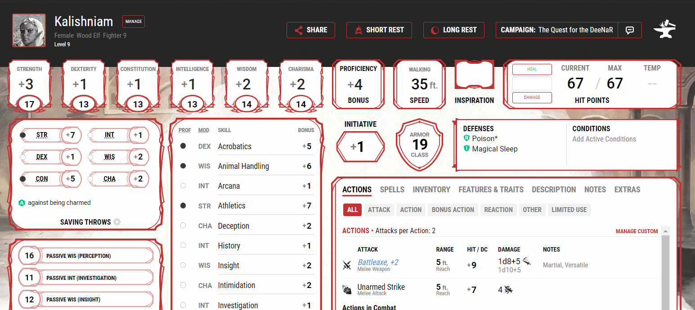

I've been apart of 3 different campaigns, 3 different characters, and tons of adventures.
My first character also happens to be my favorite character. Her name is Kalishniam, she's a Fighter Wood Elf, and wears 6in stilleto heels.
Those of you who know a thing or two about DnD are most likely wondering how I managed to convince my DM to not only allow my character to have heels, but also avoid having a disadvantage...that is the power of having a strong backstory.
Not only did he allow it, not give me disadvantage, but gave me a Charisma modifier at that.
"Willard Blundar", a Halfling Rouge with outstanding sneak abilities.

I would not be surprised if one day Willard becomes my favorite character to play at this point...He is extrememly charismatic, sneaky, and has so many connections across the globe.
I'm lucky enough to have the same DM for Willard that I had for Kalishniam, and he just introduced Kalishniam into our current campaign as an NPC. Needless to say, I'm excited to see where this story goes.
DnD BeyondLiving in Wisconsin gives me the opportunity to hike at thousands of state parks, local parks, and even a massive National Forest.
The dream is to eventually own a small cabin in the Northern Woods surrounded by trees, nature, and paths.
Chequamegon-Nicole National ForestI'll have to admit, I have only hiked during Spring and Summer at this point. I would love to get into some Autumn and Winter hiking.
I can also admit, I don't care for Spring hiking...considering the mess it can make.
I will go hiking with anyone!
It took me a very long time to appreciate the concept of History, and now that I do it's one of my favorite topics.
I've always been interested in learning new things, in the past that just meant "new" things (for example: Web Development)
In the last 2 years I've realized that the past is far more intriguing, informative, and necessry than I originally thought. The things we could learn from the past, and grow from is outstanding. I do my best to make sure I keep this in mind at all times, and that I pay attention to where I've been, and where I can go.